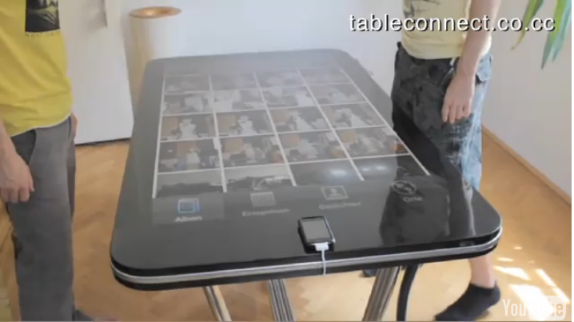

Tue, 09 Nov 2010 06:38:00 · iPhone · Apple · Geeks · Gadget · Design
table connect for iphone cest ma prochaine

Table Connect for iPhone - C'est ma prochaine table de salon.. ha! Les geeks d’aujourd’hui sont définitivement les rois de demain. Moi j’achète ça…!
~ Cliquez ici pour le plus d'info, et video ici.